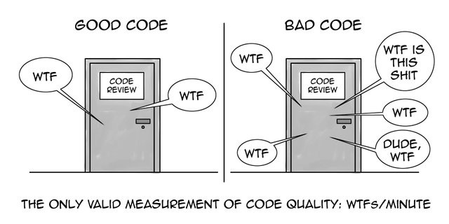

ESLint est un linter, un outil qui analyse statiquement du code et vérifie
que celui-ci respecte un certain nombre de règles configurables de manière
(très) fine.
Interêts :
• Constance du coding style (bonnes pratiques ou considérations
esthétiques) • Analyse des erreurs de syntaxes
Prettier est un code formater. Il va s’occuper de formater votre code avec
les règles qu’on lui aura définies.
Interêts :
• Le code écrit sera formaté de façon uniforme et selon des règles
établies
• L’écriture de code étant maintenant uniforme, la relecture de code
devient plus facile et on peut faire une vraie relecture de code et non un
simple survol.
Avec quelques librairies de configuration et quelques plugins on parvient
à faire fonctionner en symbiose ESLint et Prettier afin de formatter notre
code puis de le vérifier.
Husky a un slogan “Git hooks made easy” et effectivement il suffit de l‘installer puis de rajouter quelques lignes dans le fichier package.json pour déclarer des git hooks.
lint-staged permet d’executer des commandes sur tous les fichiers qui sont
staged.
Le but principal est de linter le code et d’empêcher le commit si le lint
échoue.
La relecture de code est multi-fonctionnelle : elle aide à prévenir
l’intrusion de mauvais code dans le projet mais elle permet aussi la
montée en compétence d’un nouvel arrivant sur un projet, le partage et
l’uniformisation des bonnes pratiques.
Les relecteurs peuvent faire des commentaires afin remonter des bugs, des
vulnérabilités potentielles ou des erreurs de conception.
La relecture ne doit pas remplacer la phase de recette du développeur et
du recetteur.

exemple avec GitLab :
Le développeur crée sa branche feat/my-awesome-feature à partir
de la branche develop et commence à développer.
Lorsque sonn travail est terminé,il push sa branche de
feature sur le dépot et créé une
demande de fusion (merge request) vers la branche
develop.
Une fois la demande relue et approuvée par l’équipe le développeur (ou le
maintainer) peut accepter la demande et fusionner le code vers la branche
cible.
Maintenant !
Il n’est jamais trop tôt ni trop tard pour bien faire.
Sur un nouveau projet, cette mise en place ralentira légèrement le
démarrage mais permettra de pouvoir faire évoluter facilement et
rapidement le projet tout au long de sa durée de vie.
Sur un projet déjà existant, cette mise en place va ralentir le
développement des nouvelles fonctionnalités durant un temps puis dès que
le projet respectera majoritairement vos règles de qualité de code le
temps d’écriture va s’accèlerer (puis dépasser votre vitesse d’écriture
actuelle).